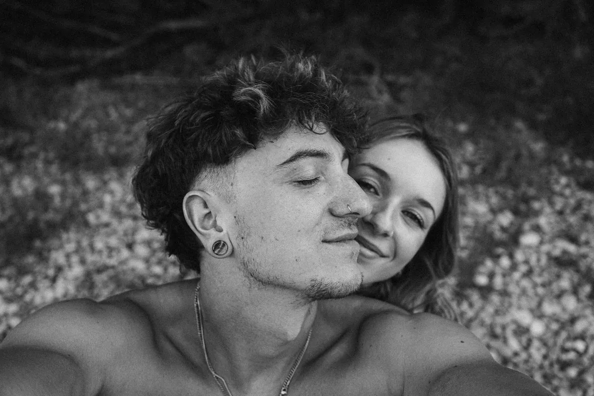
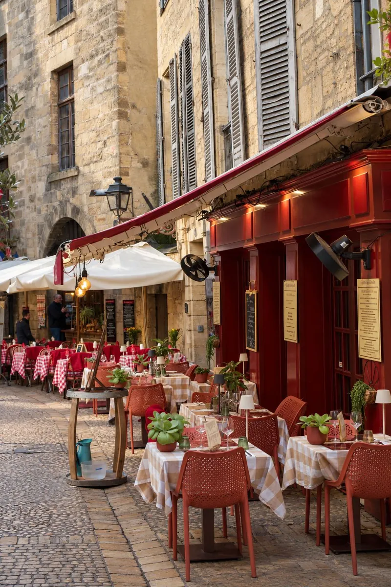

, photographe et vidéaste en Dordogne


Deux indépendants · Un même studio
L'image et le digital, réunis.
Nous sommes Alex et Elisa, indépendants en communication digitale. Alex est photographe et vidéaste, Elisa travaille la direction artistique et la création digitale. Nous réunissons nos savoir-faire pour accompagner vos projets, de la première idée à leur réalisation.
Nous accordons une importance particulière à la relation avec nos clients : des échanges simples et directs, une écoute attentive et une collaboration à chaque étape du projet.
Nos domaines d’intervention
Trois façons de raconter votre projet.
Photo & vidéo
Des images vivantes pour faire ressentir votre univers, vos événements et vos savoir-faire.
02Sites internet
Des expériences web singulières, pensées pour vos besoins et votre identité.
03Contenus réseaux
Des contenus cohérents pour nourrir votre présence et créer du lien avec votre communauté.
Notre manière de faire
De l’écoute, du soin et le sens du détail.
Chaque collaboration commence par une conversation. Nous prenons le temps de comprendre ce qui rend votre projet singulier, puis nous construisons une réponse juste, attentive à chaque étape.
Nous aimons les échanges simples, les idées qui mûrissent ensemble et les finitions qui font toute la différence.

Ils nous font confiance
Les rencontres derrière les projets.
« Votre retour d’expérience apparaîtra ici. »